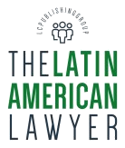

Início / O escritório
Quem somos
Técnica que protege. Estratégia que gera valor
Mais de 10 anos de experiência no cenário jurídico nacional e internacional, com trabalho técnico, personalizado e estratégico em cada caso.
Nossa história
Mais de 10 anos de atuação nacional e internacional
O Escritório Menndel & Melo Advocacia acumula mais de 10 anos de experiência no cenário jurídico nacional e internacional, com atuação destacada em Brasília e nas principais capitais do País, além de presença no exterior. Ao longo de sua trajetória, tem entregue trabalho de excelência para entidades de classe, empresas e empresários, sempre com foco em resultados consistentes.
Além disso, mantém estrutura física em Brasília para atendimento eficaz em demandas jurídicas e administrativas de diferentes complexidades, desde questões individuais dos proprietários até a estrutura empresarial completa.

O escritório atua de forma abrangente, oferecendo soluções tributárias, empresariais e administrativas junto a órgãos públicos. Também presta assistência jurídica em casos que envolvam investigações no âmbito empresarial, incluindo crimes contra a ordem pública, ambientais e outras causas penais.
Em virtude de sua atuação exemplar e corpo jurídico altamente capacitado, a Menndel & Melo Advocacia entrega trabalho técnico, personalizado e estratégico em cada caso. Essa abordagem cuidadosa, especialmente em demandas complexas, permite estabelecer com seus clientes relações duradouras, pautadas em confiança mútua e respeito.
Nossos valores
Acreditamos que a excelência não é apenas alcançada, mas constantemente aprimorada
Ética
Excelência profissional
Comprometimento com o cliente
Inovação e criatividade
Manifesto
No cenário tributário brasileiro, onde a complexidade é a regra, escolhemos ser a exceção
Um espaço de clareza, acolhimento e confiança.
Como simboliza nosso logo, o escritório tem dois pilares fundamentais: simplicidade e conhecimento.
Eles representam a essência do que entregamos diariamente aos nossos clientes: a simplicidade para descomplicar o que parece inacessível e o conhecimento para iluminar o caminho em meio às incertezas.
Assim, combatemos de frente os dois grandes obstáculos que travam as empresas no ambiente tributário: a complexidade e a dificuldade de acesso à informação confiável.
Mais do que um escritório, somos um parceiro estratégico. Um espaço onde nossos clientes encontram acolhimento, proteção jurídica e fortalecimento técnico. Oferecemos segurança para que possam recarregar suas estratégias, alimentar suas ambições e encontrar o apoio necessário para crescer.
Acreditamos no empreendedorismo como motor de transformação. Por isso, atuamos ao lado de quem constrói negócios sólidos e sustentáveis.
Seja bem-vindo. Juntos, construímos relações duradouras baseadas em confiança e resultados.
Tecnologia e IA própria
Inteligência artificial desenvolvida pelo escritório
Tecnologia aplicada ao direito tributário para dar mais profundidade e agilidade às análises. A decisão técnica permanece com os especialistas que assinam cada trabalho.
- Leitura do cenário[O que a IA analisa — validar com a equipe]
- Cruzamento técnico[Bases e fontes consultadas]
- Validação humanaRevisão e parecer por especialistas
Atuação institucional
Presentes onde as regras tributárias são discutidas
Representação técnica de entidades empresariais em audiências públicas sobre a Reforma Tributária na Câmara dos Deputados e no Senado Federal.
Coordenação tributária
Coordenação tributária
Coordenação tributária
Comissão de Direito Tributário
Audiências públicas
Audiências públicas
Compliance e Código de Conduta
Integridade como base de tudo
Nosso Manual de Compliance garante que todas as nossas relações estejam alinhadas com os mais altos padrões de ética, legalidade e responsabilidade. Atuamos com transparência, sigilo e conformidade estrita com as normas da OAB e legislação brasileira.
Reconhecimentos e premiações



Perguntas frequentes
Perguntas sobre o escritório
Há quanto tempo a Menndel & Melo atua?
O escritório acumula mais de 10 anos de experiência no cenário jurídico nacional e internacional.
Quais são os valores do escritório?
Ética, excelência profissional, comprometimento com o cliente e inovação e criatividade.
O que o logo da Menndel & Melo representa?
Os dois pilares do escritório: simplicidade, para descomplicar o que parece inacessível, e conhecimento, para iluminar o caminho em meio às incertezas.
Como o escritório usa inteligência artificial?
O escritório desenvolveu tecnologia própria aplicada ao direito tributário para dar mais profundidade e agilidade às análises. A decisão técnica permanece com os especialistas que assinam cada trabalho.
O escritório tem código de conduta?
Sim. O Código de Ética e Conduta e o Manual de Compliance orientam a atuação com transparência, sigilo e conformidade com as normas da OAB e a legislação brasileira.